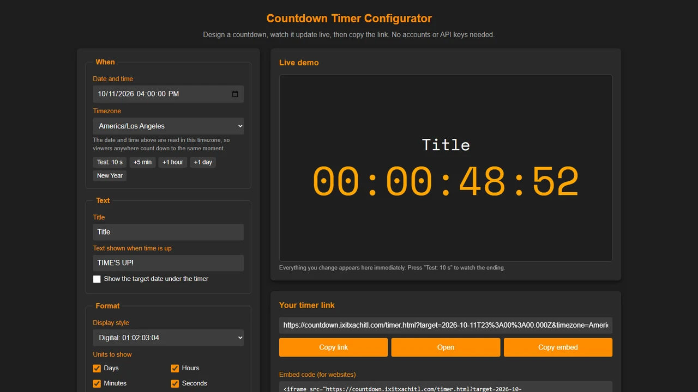

Countdown Timer
"Stream starts in…", "New Year in…", "Subathon ends in…" Design a countdown that matches your stream, with your own font, colors and effects, then paste the link into OBS. Viewers anywhere count down to the same moment.
A real timer counting down to your next New Year: blocks format, Bungee font, neon glow, transparent background.
Setup guide
Make your timer
- Open the configurator Go to countdown.ixitxachitl.com. Its live demo updates as you change things.
- Pick the moment Set the date, time and timezone you're counting down to. The quick buttons (+5 min, +1 hour, +1 day, New Year) fill it in for you.
- Style it Add a title and the text to show at the end, then choose the format, font, colors and effects. Tick Transparent under Style so only the timer shows over your scene.
- Copy the link Press Copy link. Every setting lives in the link, so you can bookmark it and come back to edit it later.
-
Add it to OBS
Add a Browser source and paste the link into its URL field (not the
Local file option). Set it to
1920×1080. The timer scales to fit.

The configurator: settings on the left, live demo and your link on the right.
Make it yours
-
Four formats: digital
01:02:03:04, short labels1d 02h, blocks with unit names, or written out in words. - Show only the units you want. Hidden ones roll into the next, so without days you get 50:00:00.
- Dozens of fonts, from pixel and digital to neon display fonts, or type in any Google Font name.
- Effects: comic ink outlines, rainbow, shine, glitch, neon glow, float, a bump on every tick, a pulse or shake in the last 10 seconds, and confetti when time runs out.
- Keep counting up after the end, blink the colons, or show the target date underneath.
Link settings
Editing the link by hand
The configurator builds the link for you, but you can also tweak it yourself. Every setting is optional
and missing ones use the defaults. The timer lives at
https://countdown.ixitxachitl.com/timer.html.
| Setting | Values | Default |
|---|---|---|
target | The end moment as an ISO date, e.g. 2027-01-01T05:00:00.000Z | none |
timezone | An IANA timezone for the date line, e.g. America/New_York | viewer's timezone |
title, endText | Any text | empty, TIME'S UP! |
format | colon, labels, blocks, words | colon |
units | Any of d h m s, e.g. hms | dhms |
font | A Google Font or system font name | Space Mono |
size | 2 to 40 (timer height as a share of the width) | 12 |
fontColor, titleColor | Hex color, e.g. #FFA500 | #FFA500, same as timer |
bg | Hex color or transparent | #1e1e1e |
pad, hideZero, overtime, blink, showDate | true or false | pad on, others off |
shineEffect, glitchEffect, glow, pulse, comic, rainbow, float, tick, shake, confetti | true or false | off |